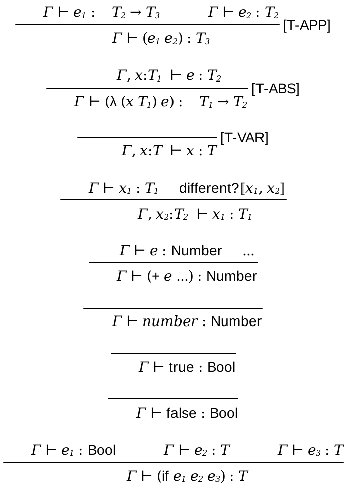
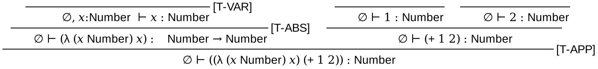
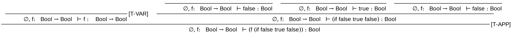

1 simply typed lambda calculus
The lambda calculus with simply type has the following rules(with base types and primitive forms).

We can check some derivation result ((λ (x Number) x) (+ 1 2)).

We can check some derivation result (f (if false true false)) where f : (→ Bool Bool).
